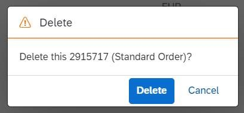

The context displayed in the dialog box is taken from the Title and Description properties of the
UI.HeaderInfo annotation (defined in the entitySet bound to the table).
Depending on the UI.HeaderInfo annotation, there can be three different types of text that can appear in the dialog
box:
When the UI.HeaderInfo annotation has both Title and Description
properties defined:
Flexible Column Layout mode: In this scenario, when you delete a single item from the table, the dialog confirmation would show the message such as the one displayed below.
Fullscreen mode: In this scenario, when you delete a single item from the table, the dialog confirmation would show the message such as the one displayed below.
<Annotation Term="UI.HeaderInfo">
<Record>
<PropertyValue Property="TypeName" String="Sales Order" />
<PropertyValue Property="TypeNamePlural" String="Sales Orders" />
<PropertyValue Property="Title">
<Record Type="UI.DataField">
<PropertyValue Property="Value" Path="so_id" />
</Record>
</PropertyValue>
<PropertyValue Property="Description">
<Record Type="UI.DataField">
<PropertyValue Property="Value" String="Sales Order" />
</Record>
</PropertyValue>
</Record>
</Annotation>
When the UI.HeaderInfo annotation has only the Title property
defined:
In this scenario, when you delete a single item from the table, the dialog confirmation would show the message such as the one displayed below.
<Annotation Term="UI.HeaderInfo">
<Record>
<PropertyValue Property="TypeName" String="Sales Order" />
<PropertyValue Property="TypeNamePlural" String="Sales Orders" />
<PropertyValue Property="Title">
<Record Type="UI.DataField">
<PropertyValue Property="Value" Path="so_id" />
</Record>
</PropertyValue>
</Record>
</Annotation>
When the UI.HeaderInfo annotation has neither the Title nor the
Description property defined:
In this scenario, when you delete a single item from the table, the dialog confirmation would show the message like the one displayed below.
The applications can override the default text by using the i18n keys mentioned below:
Main Object: These are applicable when a deletion is triggered from the list report and the main object page
UI.HeaderInfo annotation has both Title and Description
defined
Flexible Column Layout mode: The i18n key to be used is DELETE_WITH_OBJECTINFO
Fullscreen mode: The i18n key to be used is DELETE_WITH_OBJECTTITLE
UI.HeaderInfo annotation has only Title defined:
The i18n key to be used is DELETE_WITH_OBJECTTITLE
UI.HeaderInfo annotation has neither Title nor Description
defined:
The i18n key to be used is ST_GENERIC_DELETE_SELECTED.
Sub Entity: These are applicable when a deletion is triggered from object page tables or the subobject.
UI.HeaderInfo annotation has both Title and Description
defined
Flexible Column Layout mode: The i18n key to be used is
DELETE_SELECTED_ITEM_WITH_OBJECTINFO
Fullscreen mode: The i18n key to be used is DELETE_SELECTED_ITEM_WITH_OBJECTTITLE
UI.HeaderInfo annotation has only Title defined
The i18n key to be used is DELETE_SELECTED_ITEM_WITH_OBJECTTITLE
UI.HeaderInfo annotation has neither Title nor Description
defined:
The i18n key to be used is DELETE_SELECTED_ITEM
The delete message for the main object (list report) does not yet consider the UI.HeaderInfo annotation. This is also
true for a deletion from any table.
The applications can override the default text by the mechanism described in Replacing Standard UI Texts using the i18n keys mentioned below:
Delete from List Report:
The generic delete confirmation message via the i18n key
C_TRANSACTION_HELPER_OBJECT_PAGE_CONFIRM_DELETE_WITH_OBJECTTITLE_SINGULAR is displayed. This can be
overridden by the applications.
Delete from Object Page (or Subobject Page) Header:
The i18n key to be used is C_TRANSACTION_HELPER_OBJECT_PAGE_CONFIRM_DELETE_WITH_OBJECTINFO
Only in this case is the UI.HeaderInfo.Title (2915717 in the above screenshot) considered
along with the UI.HeaderInfo.Description (Standard Order in the above screenshot).
Delete from Object or Subobject Page Table:
The i18n key to be used is C_TRANSACTION_HELPER_OBJECT_PAGE_CONFIRM_DELETE_WITH_OBJECTTITLE_SINGULAR
Applications that override the delete message when a single entry is being deleted from the table should revisit the
UI.HeaderInfo annotation’s configuration and adapt the texts accordingly.